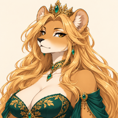

Player wiki noticeThis community-maintained page may contain gameplay, story, and mature-content spoilers.

概览
Leona 是狮子女王 野树林时, 野心脏 mod,她和来宾见面 Canopy 常识在那里,她听 社区日常的顾虑没有法院仪式。
她目前执行的个人内容包括: 两个自动故事场景和每日谈话本指南涵盖她所在世界的两处场景和访问要求。
快速状态
| 属性 | 数值 |
|---|---|
| 年龄 | 30 |
| 世界 | 野心:野林 |
| 地点 | Canopy 常识 |
| 时间表 | 整天,每天都这样,而野心是启用和可访问的 |
| 最喜欢的数据 | 魅力60;情报60 |
| 特殊关系技能 | 无配置 |
| 可重复的个人行动 | 谈话:20分钟,每天5次 |
| Story场景 | 一个没有仪式的女王;欢迎的形状 |
最喜欢的STAT阈值提高了普通关系收益。 修改者之前的基础奖励.
达到Leona
- 打开 主菜单中的模块管理器 并启用 野心:野林。如果改变其启用状态, 重新开始游戏 以应用更改。
- 实现模式 野心赎回要求允许调制和赎回调制是不同的要求。
- 查找 进入森林深处的野树林 输入 野林网关在满足上述两项要求时,可以进入。
- 旅费 Canopy 常识 并打开 Leona 的肖像。她的行程覆盖全天,没有额外的故事或关系门。
您不需要完成另一个Wildheart字符的介绍开始Leona的路由.
建议走过
- 访问 Canopy 常识 (单位:千美元) 一个没有仪式的女王它会自动触发一次 没有最低关系阶段.
- 选择您的回复 。 照顾 给予最优厚的报酬: 4个选择爱加5个完成爱 9个基础爱.
- 使用 说话时,最多 每日5次(每场5次),直到Leona达到 已知。标准阈值是 25个感情最喜爱的STAT奖金可以减少所需天数.
- 回归 Canopy 常识 介绍之后, 已知或以上,用于 欢迎的形状.
- 好笑还是滑稽 给予最高奖赏 4个选择的爱加上8个完成的爱 12个基础的爱.
两个场景都能触发 任何时间。返回常识可以让游戏检查下一个场景的要求,每个场景都有自己的完成旗,播放一次。
每日交谈
| 行动 | 所需资源 | 费用 | 奖励/津贴 |
|---|---|---|---|
| 说话 | Leona 可在 Canopy 常识; 可从 陌生人 | 20分钟 | 1个基本感情;每天5次 |
演讲者奖 1个基本感情尽管行动定义包含一个零点占位符。 100分钟 裁决 5个基本感情 在修饰者之前。
在她日津贴记录后说话 -1个基本感情。在继续前等待下一场比赛的第二天。不需要任何礼物来达到已知:她的介绍和日常交谈就足够了。
Story 选择奖励
每个场景中的所有三个回复都在同一场景的完成上汇合.您的选择会影响感情和即时反应;它不会创建一个单独的路径或锁定第二场景.
| 场景/回应 | 选择爱 | 完成爱 | 总的感情基础 |
|---|---|---|---|
| 一个没有仪式的女王——照顾: 我将倾听最熟悉这个地方的人的声音。 | 4 | 5 | 9 |
| 一个没有仪式的女王——有趣: “我是否应该直接向你报告任何可疑的长凳?” | 3 | 5 | 8 |
| 一个没有仪式的女王——弗利蒂: “我可能很难长时间地远离你来探索。” | 3 | 5 | 8 |
| 欢迎的形状——关爱: “我可以听而不答应任何一方的答复。” | 3 | 8 | 11 |
| 欢迎的形状——有趣: “我可以提出问题,但我拒绝戴部长的帽子。” | 4 | 8 | 12 |
| 欢迎的形状——花样: “如果你想要陪伴,我想与你同行。” | 4 | 8 | 12 |
当前内容和解决问题
欢迎的形状是Leona目前注册的个人故事的结尾. 你可以继续每天谈话,但进一步增加感情并不能解锁额外的执行场景。她目前的定义是 没有个人礼物,技能课程,日期,心对心或公寓谈话.
如果没有野林,请检查 模式的允许状态及其赎回要求,然后在更改 Mod 管理器设置后重新启动。如果 Leona 的第二个场景没有出现,请完成 一个没有仪式的女王覆盖 已知,并重新审视 Canopy 常识。没有仅晚间窗口或另一个NPC的场景可以先完成。
相关页面
Overview
Leona is the lioness queen of Wild Woods, in the Wildheart mod. She meets visitors at Canopy Commons, where she listens to the community's everyday concerns without court ceremony.
Her currently implemented personal content consists of two automatic story scenes and daily Talk. This guide covers both scenes and the access requirements for her world.
Quick Stats
| Attribute | Value |
|---|---|
| Age | 30 |
| World | Wildheart: Wild Woods |
| Location | Canopy Commons |
| Schedule | All day, every day, while Wildheart is enabled and accessible |
| Favorite stats | Charm 60; Intelligence 60 |
| Special relationship skill | None configured |
| Repeatable personal action | Talk: 20 minutes, five times per day |
| Story scenes | A Queen Without Ceremony; The Shape of Welcome |
Favorite stat thresholds improve ordinary relationship gains. Affection amounts below are base rewards before modifiers.
Reaching Leona
- Open Mod Manager from the main menu and enable Wildheart: Wild Woods. If you change its enabled state, restart the game to apply the change.
- Fulfill the mod's Wildheart redeem requirement. Enabling the mod and redeeming its access are separate requirements.
- Find Enter Wild Woods in Deep Woods and enter the Wild Woods Gateway. The entrance is available when both requirements above are satisfied.
- Travel to Canopy Commons and open Leona's portrait. Her schedule covers the full day and has no additional story or relationship gate.
You do not need to complete another Wildheart character's introduction to start Leona's route.
Recommended Walkthrough
- Visit Canopy Commons for A Queen Without Ceremony. It triggers automatically, once, with no minimum relationship stage.
- Choose your reply. Caring gives the highest reward: 4 choice affection plus 5 completion affection, for 9 base affection.
- Use Talk, up to five times each day, until Leona reaches Known. The standard Known threshold is 25 affection. Favorite stat bonuses can reduce the number of days required.
- Return to Canopy Commons after the introduction, at Known or higher, for The Shape of Welcome.
- Funny or Flirty gives the highest reward in that scene: 4 choice affection plus 8 completion affection, for 12 base affection.
Both scenes can trigger at any hour. Returning to the Commons allows the game to check the next scene's requirements. Each scene has its own completion flag and plays once.
Daily Conversation
| Action | Requirements | Cost | Reward / allowance |
|---|---|---|---|
| Talk | Leona available at Canopy Commons; usable from Stranger | 20 minutes | 1 base affection; five times per day |
The Talk handler awards 1 base affection, even though the action definition contains a zero-point placeholder. Five successful talks take 100 minutes and award 5 base affection before modifiers.
Talking after her daily allowance records −1 base affection. Wait for the next game day before continuing. No gift is needed to reach Known: her introduction and daily conversations are sufficient.
Story Choice Rewards
All three replies in each scene converge on the same scene completion. Your choice affects affection and the immediate response; it does not create a separate route or lock out the second scene.
| Scene / response | Choice affection | Completion affection | Total base affection |
|---|---|---|---|
| A Queen Without Ceremony — Caring: “I will listen to the people who know this place best.” | 4 | 5 | 9 |
| A Queen Without Ceremony — Funny: “Should I report any suspicious benches directly to you?” | 3 | 5 | 8 |
| A Queen Without Ceremony — Flirty: “I may have trouble looking away from you long enough to explore.” | 3 | 5 | 8 |
| The Shape of Welcome — Caring: “I can listen without promising either side an answer.” | 3 | 8 | 11 |
| The Shape of Welcome — Funny: “I can carry questions, but I refuse to wear a minister's hat.” | 4 | 8 | 12 |
| The Shape of Welcome — Flirty: “I would like to walk beside you, if you want the company.” | 4 | 8 | 12 |
Current Content and Troubleshooting
The Shape of Welcome is the end of Leona's currently registered personal story. You can continue daily Talk afterward, but raising affection further does not unlock an additional implemented scene. Her current definition has no personal gifts, skill lessons, dates, Heart-to-Hearts or apartment conversations.
If Wild Woods is unavailable, check both the mod's enabled state and its redeem requirement, then restart after changing Mod Manager settings. If Leona's second scene has not appeared, complete A Queen Without Ceremony, reach Known, and revisit Canopy Commons. There is no evening-only window or another NPC's scene to complete first.
Related Pages
Text adapted from the community-maintained Chronoromancer Wiki under CC BY-SA 4.0.